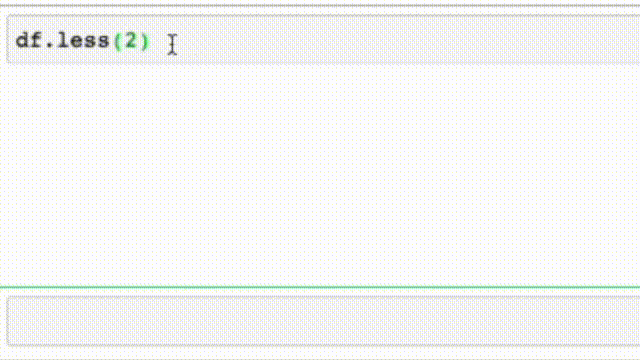
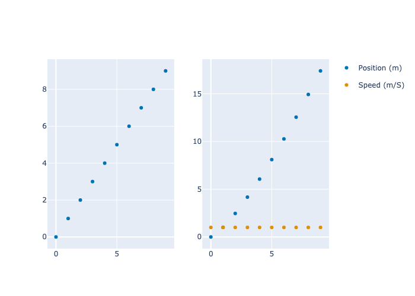
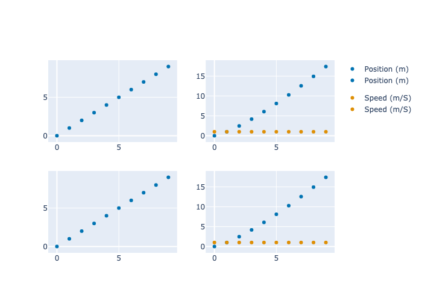

from pdpatch.all import *pdpatch
New methods for pandas DataFrame and Series.
pdpatch adds methods to pandas’ DataFrame and Series for a faster data science pipeline. It also defines drop-in replacements for seaborn and plotly.express that automatically label axes with nicer titles. We use nbdev to build this project.
Install
pip install pdpatch
How to use
Interactive Method .less()

Automatically Rename snake_case columns in plotly.express and seaborn
import pandas as pd
from pdpatch.express import *
df = pd.DataFrame({'time__s__': range(10), 'position__m__': [i**1.3 for i in range(10)], 'speed__m/s__': 10*[1]})
#df = pd.DataFrame({'time__s__': range(10), 'position__m__': range(10)})
px.scatter(df, x='time__s__', y='position__m__').show('png')
from pdpatch.seaborn import sns
sns.scatterplot(data=df, x='time__s__', y='position__m__');
Add Altair-like Operation to plotly Figures
fig = px.scatter(df,x='time__s__', y='time__s__') | px.scatter(df,x='time__s__', y=['position__m__', 'speed__m/s__'])
fig.show('png')
fig = px.scatter(df,x='time__s__', y='time__s__') / px.scatter(df,x='time__s__', y=['position__m__', 'speed__m/s__'])
fig.show('png')
fig = px.scatter(df,x='time__s__', y='time__s__') | px.scatter(df,x='time__s__', y=['position__m__', 'speed__m/s__'])
(fig / fig).show('png')
Shorter methods
df.rename(columns={'col_1': 'new_name'})->df.renamec('col_1', 'new_name')
df = dummydf()
df.renamec('col_1', 'new_name').to_html()| new_name | col_2 | |
|---|---|---|
| 0 | 100 | a |
| 1 | 101 | b |
| 2 | 102 | c |
| 3 | 103 | d |
| 4 | 104 | e |
Functions as methods
df.len()5New methods
df.col_1.minmax(100, 104)Utility functions
df = dummydf()
df.to_html()| col_1 | col_2 | |
|---|---|---|
| 0 | 100 | a |
| 1 | 101 | b |
| 2 | 102 | c |
| 3 | 103 | d |
| 4 | 104 | e |